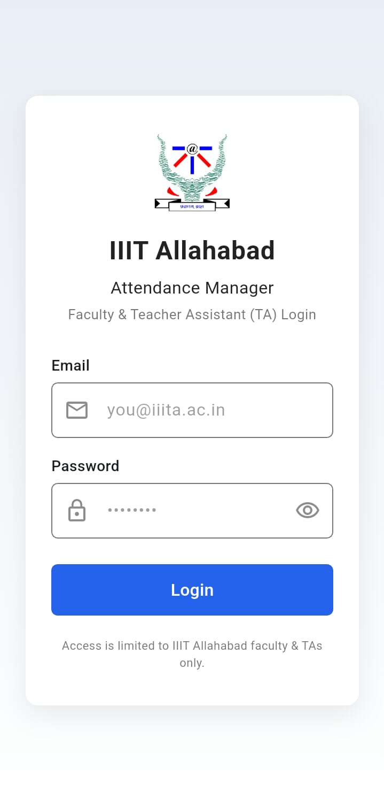
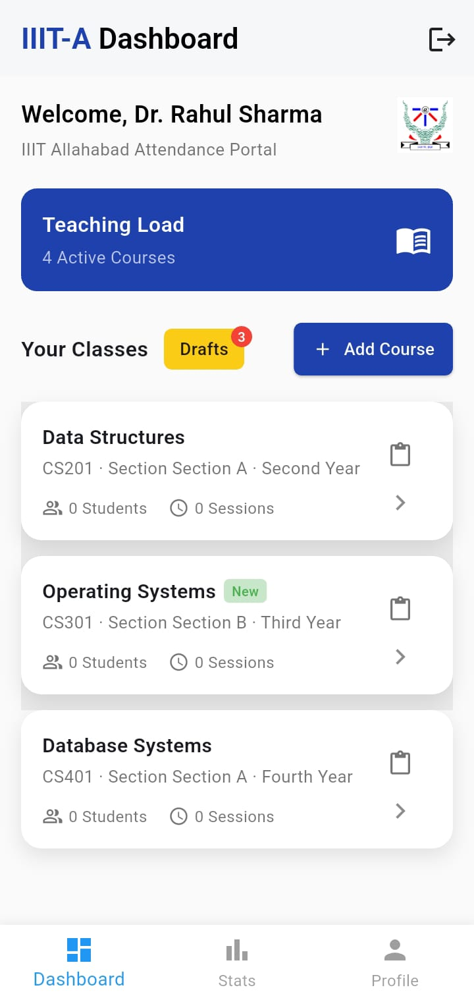
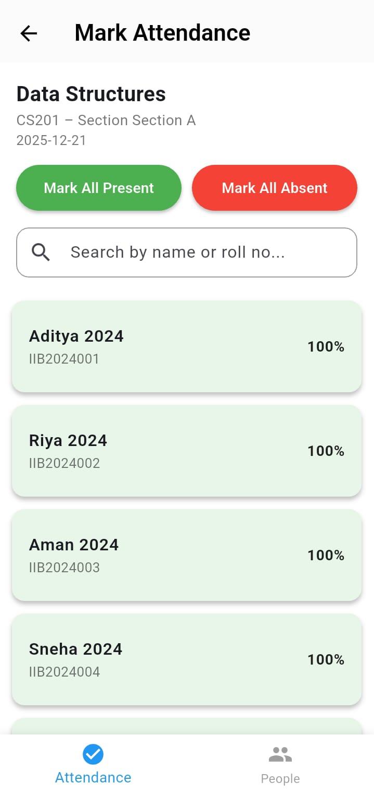
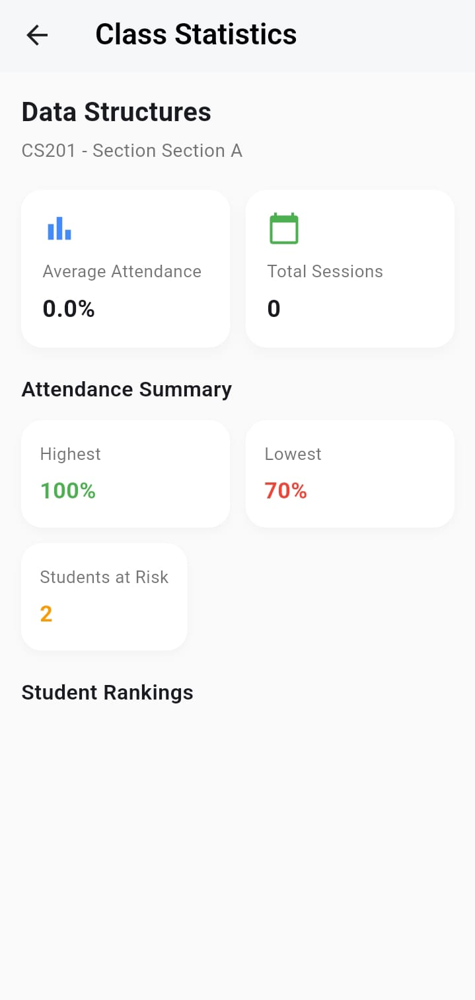
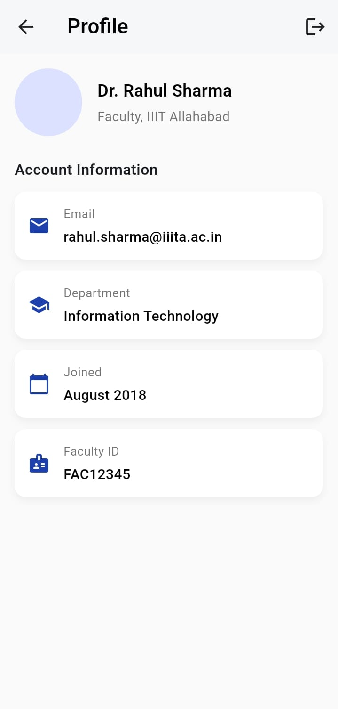

Attendance Management System
The Attendance Management System is an Android application developed using Flutter that simplifies and digitizes attendance tracking for educational institutes. It allows teachers to mark, manage, and review student attendance efficiently through a mobile-friendly interface, reducing manual paperwork and errors.
It focuses on providing a clean, structured, and role-based interface that allows faculty to mark attendance efficiently and administrators to manage records accurately.





Tech Stack
 Flutter
Flutter
Future Innovations
Backend integration for persistent storage, role-based authentication, analytics dashboards, exportable attendance reports, and institute-wide scalability.